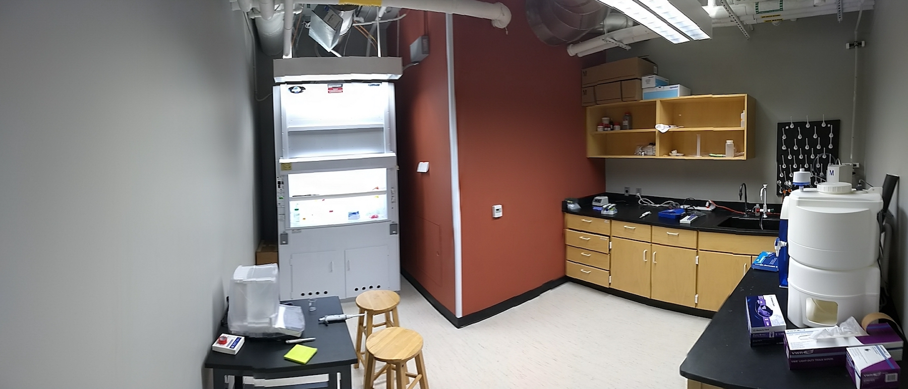
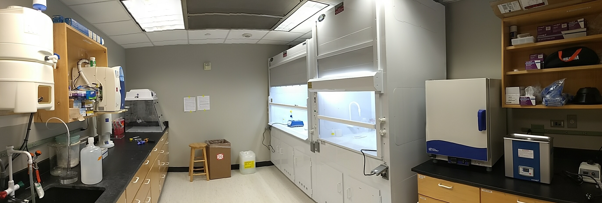

Instrument Space: ThermoFisher iCap TQ-ICP-MS, ThermoFisher Integrion Ion Chromatograph, and a Picarro L2130-i water isotope analyzer
Water Prep Space: HEPA-filtered fume hood, balance, Milli-Q system
Sediment Prep Space: HEPA-filtered fume hood, conventional fume hood, Milli-Q system, Centrifuge, Drying Oven, Vertical Laminar Flow Bench, Sonicator.